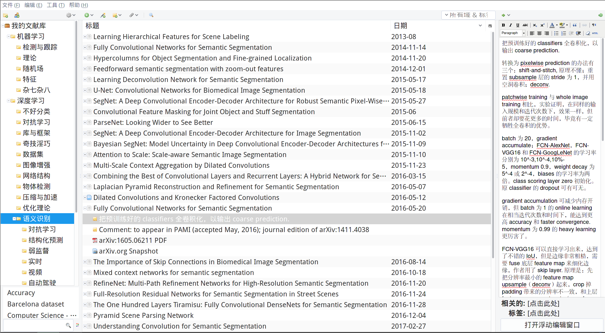

如何跟进深度学习的研究前沿？
起步
一开始没必要就读论文，而是通过 cs231n, deep learning 等教程打好基础。其实由于深度学习这领域刚发展起来，所以 CS213n 给了不少论文的对应关键词，比如 AlexNet, VGGNet, ZFNet, GoogLeNet, ResNet 等等。可以从这相当基本的论文开始读，如果作为本科生且没有接受过学术训练，花一周以上才免强读懂一篇论文也不奇怪，但读多了就越来越快，我现在刚两小时略读完一篇论文，如果是很水的论文大概可能在半小时就全读完。
如果很难读懂论文，可以先搜搜别人的论文笔记（当然是中文），来源经常包括 CSDN 博客，简书，知乎问答，知乎专栏甚至个人博客等等，我都订阅了它们的 RSS, 其中知乎专栏可以直接用 Inoreader 订阅。
用 Zotero 管理论文
我用 Zotero 管理论文，它有三个优势：可以通过浏览器插件在相关网页上（比如 arXiv, Google Scorlar, Microsoft Research 等等）一键收录论文到 Zotero; 可以在论文条目下写笔记；论文分类、归档、排序十分方便。怎么用 Zotero 管理网上满是教程，我就不赘述了，我只给大家看看我的分类树以及时间排序界面：

于是读的论文可以按时间和重要性排序递增，顺便一提，分类树随时要修改以符合你当前心中的最佳分类，比如我以前把 AlexNet, VGGNet, ZFNet, GoogLeNet, ResNet 等都是放到「年度论文」的，但现在我把它们改移到「网络结构」里了，同时该分类还有 Network in Network, Highway Networks 等等；此外我曾经有个分类「奇技淫巧」，旗下又有「训练算法」，「防过拟合」，「权重初始化」和「激活函数」等等，但我最近嫌分类太散乱，于是又花了点时间苦思冥想，终于想出更合适的分类「优化理论」，我便取消「奇技淫巧」这分类，把大部分论文都归档到这新分类。
收集论文、开始跟进研究前沿
读论文多了，你就会越来越熟悉你所从事领域的学术大牛，比如物体检测的 Ross Girshick, 语义识别的 Jifeng Dai, 对抗学习的 Goodfellow 等等。这时可以直接在 Google Scholar 的学术用户页面上关注他们的新文章，这样可以在第一时间收到他们发表论文的最新动态。或者干脆天天刷 arxiv 也可以，当初 Focal Loss 那篇论文我晚了好几天才收到 Google 快讯，而别人早在知乎相关问题讨论起来了，一问才知道他们习惯天天刷 arxiv, 可惜我连 Zotero 里的论文都没读完，更别说天天刷新论文了。
在知乎上也可以关注顶级会议、学术竞赛的相关问题，比如 CVPR 2017 有什么值得关注的亮点? 和 如何评价ILSVRC2016的比赛结果？ 上面会有别人帮你总结好的答案，直接按图索骥即可。
也可以直接去学术竞赛看天梯排名，看看当前战斗力最强的模型对应的论文是啥，扒下来读，比如 PASCAL VOC 2012 Segmentation Competition 当前的首席 DeepLabv3 和第五席 PSPNet.
如果打算专心用 PyTorch 做研究，可以订阅 awesome-pytorch 的 RSS, 对其他 GitHub 上的类似 awesome 项目也可如法炮制。
最后，若有人能带你就更好，比如导师会收集论文并传给学生，据我所知商汤他们每周有论文分享会，以跟进论文最新前沿。
Written with StackEdit.